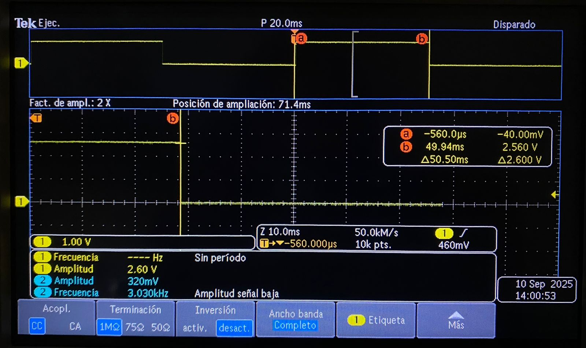

⏱️ Medición en osciloscopio del periodo y jitter usando ALARM0 (modo µs)
Selene Román Celis - 15/09/2025
Qué debe hacer
Genera una onda cuadrada por toggle de un pin de salida en la ISR de ALARM0, con rearme acumulativo y periodo nominal definido por ti (p. ej., 100 µs–5 ms). Mide con osciloscopio:
-
Periodo promedio y tolerancia.
-
Jitter pico-a-pico y, si tu equipo lo permite, RMS.
-
Describe la configuración del osciloscopio (acoplamiento, escala de tiempo/voltaje, modo de medición). No cambiar la resolución del timer (mantener modo µs).
Código
// Blink con timer (SDK alto nivel): cambia BLINK_MS para ajustar
#include "pico/stdlib.h"
#include "pico/time.h"
#define LED_PIN 0
static const int BLINK_MS = 50;
bool blink_cb(repeating_timer_t *t) {
static bool on = false;
gpio_put(LED_PIN, on = !on);
return true; // seguir repitiendo la alarma
}
int main() {
stdio_init_all();
gpio_init(LED_PIN);
gpio_set_dir(LED_PIN, true);
repeating_timer_t timer;
// Programa una interrupción periódica cada BLINK_MS:
add_repeating_timer_ms(BLINK_MS, blink_cb, NULL, &timer);
while (true) {
// El trabajo "pesado" debería ir aquí (no en la ISR).
tight_loop_contents();
}
}
En el esquema se muestra la forma de onda obtenida del osciloscopio.
Esquema

- Periodo promedio medido: 49.94 ms
- Tolerancia: aproximadamente ±0.56 ms
- Jitter pico-a-pico: ~560 µs
- Acoplamiento: CC
- Escala de tiempo: 20 ms/div y 10 ms/div
- Escala de voltaje: 1 V/div.
- Modo de disparo: flanco, canal 1, nivel medio de la señal (~1.3 V)